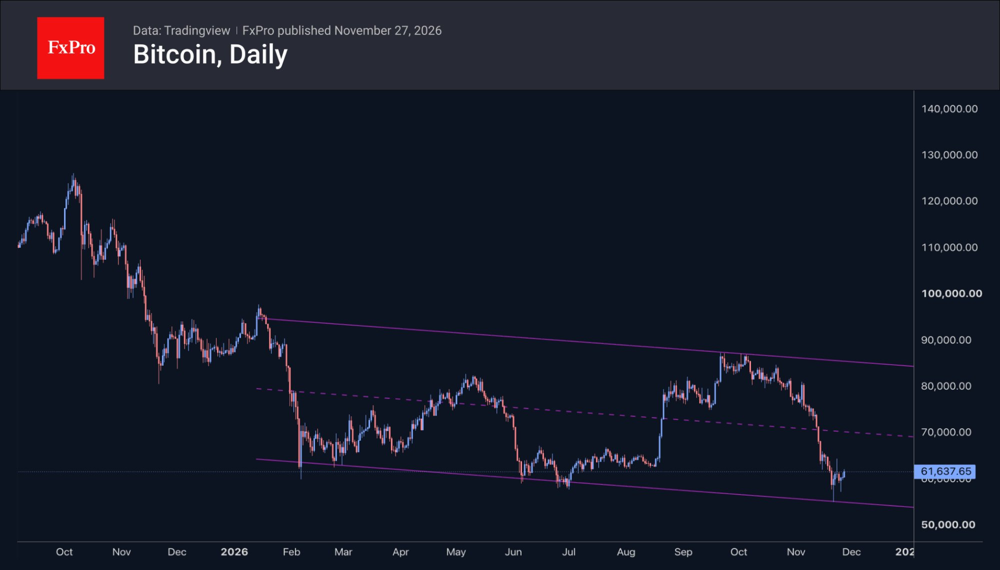

SEO
Meta Title: Crypto market tries to break through resistance
Meta Description: Crypto market cap rose 1.4% to $2.11T, with Bitcoin at $61.6K. In our view, a move above $64K would be a serious bid for a reversal.
Crypto market tries to break through resistance
- Crypto market capitalisation rose 1.4% to $2.11T, approaching the upper boundary of its eight-day range.
- Bitcoin gained 1.5% to $61.6K; a move above $64K would be a serious signal of a shift in sentiment.
- A drop to $57K would bring back the short-term bearish scenario.
Market Overview
The crypto market capitalisation has recovered by a further 1.4% to $2.11T, approaching the upper boundary of the range seen over the last eight days, during which we have witnessed heightened volatility, with attempts to break down at the lows. The current period of consolidation, should it drag on, will face resistance at the former July–August support. Over the summer, however, the market repeatedly turned lower as it approached the February–April lows. This sequence of lower local lows is not confirmed by lower local highs, which by early October had exceeded those of May, suggesting a break in the downtrend. However, the latest dip has made us more cautious, though we maintain a positive outlook on near-term prospects. Over the past 24 hours, the top performers were Hyperliquid (+6.8%), Chainlink (+4.4%) and Aptos (+3.7%). The three worst performers on our list of liquid instruments were Cosmos (-0.7%), Official Trump (-0.1%) and Tron (+0.4%).
Bitcoin rose by 1.5% to $61.6K, returning to the upper boundary of its local trading range, excluding Monday's spike following the Nasdaq-100. A move above $64K would be a serious indication of a shift in market sentiment. However, such positivity should be taken with a pinch of salt, as it has yet to be tested for liquidity when traders return next week. A drop to $57K would signal a return to the short-term bearish scenario.
News Background
Bitcoin is close to its eighth consecutive week of decline. The market has not seen such a long run since spring 2022, when the crypto market plunged after the collapse of the Terra ecosystem. At that time, BTC closed in the red for nine consecutive weeks.
Galaxy Digital has acknowledged that its October forecast of an end to Bitcoin's decline was a mistake. The situation in the crypto market has turned out to be significantly worse than expected, and a daily close below $58,525 would signal a further decline.
21Shares believes Bitcoin could fall below $45K unless inflows into ETFs recover and the supply of stablecoins begins to rise.
Strategy founder Michael Saylor has described his company as the "central bank of the crypto economy" and announced its long-term goal: to buy up all the Bitcoin yet to be mined and drive the price up to $10 million per coin. He acknowledged that "it has been a tough year", with Strategy's unrealised loss on its BTC reserves reaching $12 billion.
Fidelity Investments has filed an application with the US SEC to launch a spot ETF linked to the cryptocurrency Chainlink (LINK). Two similar funds from Bitwise and Grayscale are already operating on the market.
Thousands of miners have fallen victim to a new type of attack, mining pool operator Braiins has announced. Hackers are redirecting Bitcoin miners' computing power to pools under their control, exploiting a vulnerability in the unencrypted Stratum V1 protocol. As a result, Bitcoin mining rewards are being sent not to the device owner, but to the attackers' wallets.
What to watch
Base case: in our view, the market is consolidating near the upper boundary of its weekly range, but the positive momentum has yet to be tested for liquidity when traders return next week. A Bitcoin move above $64K would be a serious signal of a shift in sentiment.
Risk: a drop to $57K would bring back the short-term bearish scenario.
Upcoming: ISM on 1 December; NFP on 4 December; the Fed decision on 9 December. Check the economic calendar for more events.
The FxPro Analyst Team
Charts

Source: CoinMarketCap, as of 27 November 2026.
Alt text: Line chart from January to November 2026: total crypto market capitalisation (pink line) has recovered to $2.11 trillion from lows near $2 trillion, below the 200-day (yellow line) and 50-day (green line) moving averages.

Source: TradingView, as of 27 November 2026.
Alt text: Daily candlestick chart of Bitcoin from September 2025 to November 2026: the price at $61,638 near the lower boundary of a descending channel (purple lines) drawn from the January peak near $97K.
Links
- the range seen over the last eight days → "Crypto market steps back from the brink ahead of the long weekend", 26.11.2026 → https://fxpro.news/crypto/crypto-market-steps-back-from-the-brink-ahead-of-the-long-weekend/
- the latest dip → "Crypto market rebounds after slipping to two-year lows", 23.11.2026 → https://fxpro.news/crypto/crypto-market-rebounds-after-slipping-to-two-year-lows/
- Bitcoin (instrument page) → https://fxpro.news/quotes/bitcoin/
- Nasdaq-100 → "A dead cat bounce in the Nasdaq-100?", 24.11.2026 → https://fxpro.news/market-overview/a-dead-cat-bounce-in-the-nasdaq-100/
- its eighth consecutive week of decline → "Weekly round-up: dollar retreats from its high…", 26.11.2026 → https://fxpro.news/market-overview/weekly-round-up-dollar-retreats-from-its-high-sp-500-and-gold-try-to-find-a-bottom-money-flees-bitcoin/
- Check the economic calendar for more events. → https://fxpro.news/economic-calendar/